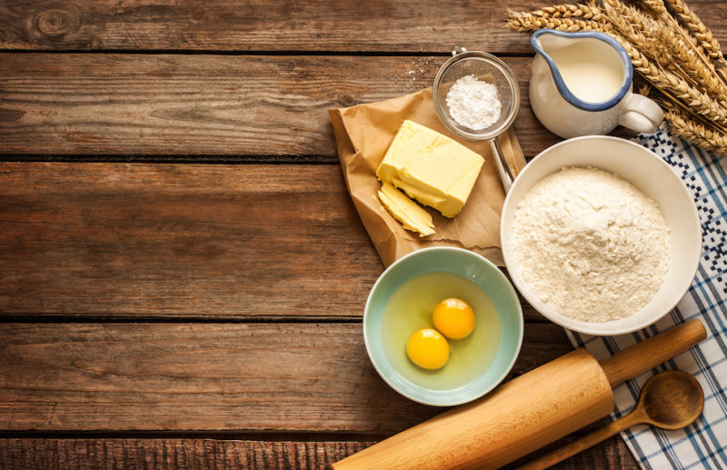
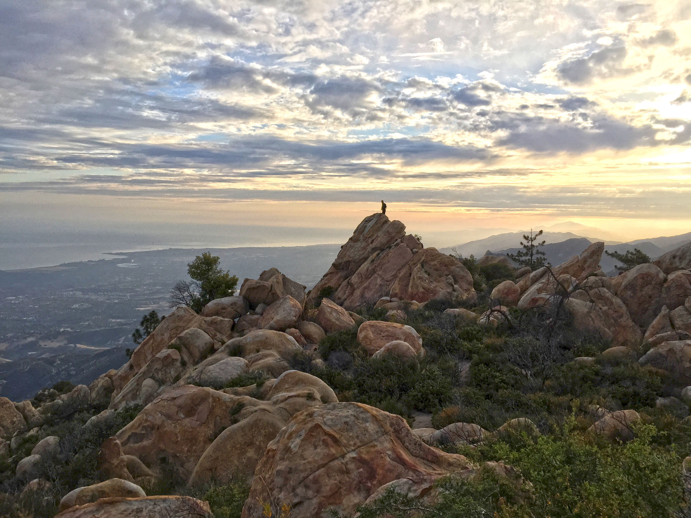

These are a few of the things I enjoy and feel fortunate doing when I'm not coding my life away!
Music Production
I have always enjoyed music, and I think it's in great part thanks to my father, who taught me guitar when I was around 10 years old. I then got my own guitar and rapidly started a punk-rock band with two of my best friends.
Once in highschool I joined another more advanced and serious band, and polished a lot of my musical skills and tastes.
When the band eventually split at the end of highschool, I found an interest in continuing making music on my own, and this time on a laptop rather than in a band. Highly influenced by music discovered in later years amd shown to me by various friends, my style changed as well, focusing mainly on producing chill edm.
To this day I still produce music as a hobby, very slowly, but it is a crucial part of my life, couldn't do without it. Check-out my Soundcloud!
Cooking and Baking
Cooking and baking have always been a big part of what brings my family together. My parents have always prepared home-cooked meals for us, and my sister got an interest in baking at a very young age. For me it came later.
Probably by necessity, I started cooking more advanced dishes than pasta and eggs when I became an adult and lived in a relationship. The pleasure and satisfaction of serving a home-made meal hit me then. The lockdown obviously allowed me to have more time to practice recipes and especially baking bread, which is one of the things I miss most from my home country.
Since then I have been replicating my family's diverse recipes when ever I have time or a good excuse of an occasion to just cook and bake.
There are still so many classics of my childhood I want to replicate. It is actually one of my projects to make a website to be able to share those recipes with the rest of the world, in a detailed and easy to understand manner. Wether it's my italian grandma's Tiramisu or my brother-in-law's Gateau Basque recipe, there are so many good things I think are worth sharing.
Hiking
I moved to Santa Barbara about 10 years ago now (2023 now), and one of people's favorite activity to hear is hiking. And how could I blame them, the area is nothing short of breathtakingly beautiful.
It is the perfect outing to go on either alone or with friends, and there are so many trails to choose from. I is also an amazing way to discover the area and it's fauna and flora.
It is a go-to for regular physical activity or a once in a while much needed mental boost, as walking in nature is the perfect way to introspect and organize your thoughts.
I highly recommend it of you are ever lucky enough to be in these parts or anywhere that offers nice trails to discover!